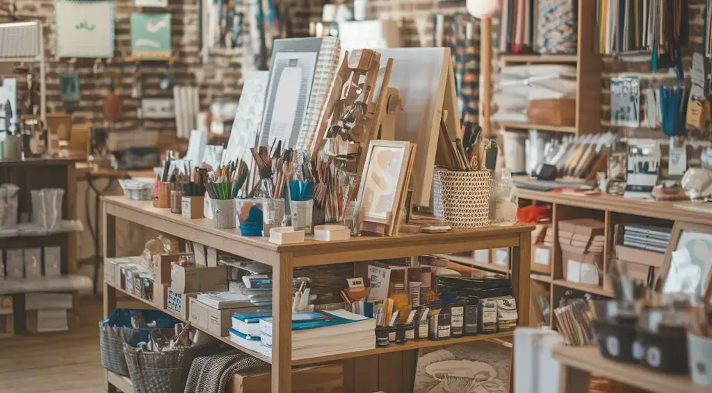

Experience the DIYDen Difference
Welcome to DIYDen, your ultimate destination for all things creative. Whether you're painting, crafting, or designing, we provide the best materials to fuel your imagination. Let’s make something extraordinary together! Explore our wide range of products, from high-quality paints and brushes to unique DIY kits and expert guidance. Join our community of passionate creators and discover endless inspiration to bring your artistic visions to life.
At DIYDen, we believe in the power of imagination and the joy of bringing ideas to life.
Your creativity has no limits at DIYDen. Find everything from premium supplies to expert guidance—because every artist deserves the best tools! Whether you're looking to create a one-of-a-kind gift, decorate your home, or simply express yourself, DIYDen is the perfect place to start. Explore our curated selection of materials and discover new techniques to elevate your skills. Join our vibrant community of creators and gain access to exclusive workshops, insightful tutorials, and inspiring projects designed to spark your imagination. With DIYDen, your artistic journey is fully supported and endlessly exciting. Let's craft your dreams into reality!
Discover Inspiring Creations
From beginners to experts, DIYDen supports every artist's journey with top-quality supplies and endless inspiration.
Crafting & DIY Kits
Get started with all-in-one kits designed to make your creative process seamless and fun!
Painting & Sketching
Find the perfect shades, brushes, and canvases to bring your visions to life with precision and vibrancy.
Handmade Accessories
Create and showcase your unique style with DIYDen’s exclusive handmade accessory materials.
Frequently Asked Questions
How do I choose the right art supplies?
What’s the best way to start a new hobby?
Do you offer tutorials for beginners?
Can I customize a DIY kit?
What payment options are available?
How do I place an order?
Can I get help with urgent crafting needs?
How can I contact DIYDen support?
DIYDen Trends: What’s Hot in 2024

Latest DIY Trends
Creativity is evolving, and 2024 is shaping up to be an exciting year for DIY enthusiasts. From sustainable crafting to the rise of digital artistry, the latest trends are all about personalization, accessibility, and eco-conscious choices. Whether you're a seasoned maker or just starting, there's something new and inspiring for everyone to explore.
- Eco-Friendly Creations: More artists and crafters are embracing sustainable materials, opting for recycled, biodegradable, and upcycled resources. At DIYDen, we support this movement by offering an extensive range of environmentally friendly products. Join the initiative and create stunning art while being mindful of the planet!
- Personalized DIY: Customization is key in 2024! More people are seeking ways to make their projects truly one-of-a-kind. From personalized home décor to bespoke jewelry and fashion, DIYers are exploring innovative ways to infuse their personal style into everything they create. Learn new techniques and discover unique tools to craft pieces that reflect your individuality.
- Accessible Art: DIY is more inclusive than ever, with easy-to-follow projects designed for every skill level. Whether you’re a beginner looking for simple crafts or an experienced artist diving into advanced techniques, there's a wealth of creative opportunities available. Step into the world of DIY with guided tutorials, step-by-step kits, and expert advice to help bring your visions to life.
Advancing Creative Technology
The intersection of technology and creativity is pushing DIY to new heights. With smart art tools, digital drawing tablets, and AI-assisted design software, the possibilities for innovation are endless. DIYDen provides access to cutting-edge resources that empower creators to experiment and elevate their craft. Explore a new world where traditional techniques blend seamlessly with modern advancements.
Smart Art Tools: Precision cutters, automated embroidery machines, and AI-assisted design software are revolutionizing how DIYers work. Whether you’re interested in digital illustration, 3D printing, or laser cutting, these advanced tools help streamline the creative process and expand artistic possibilities.
Sustainability in Creativity
Environmental awareness is shaping the way people approach DIY. More crafters are turning to sustainable materials, eco-friendly practices, and responsible sourcing. DIYDen is committed to promoting green initiatives by offering products that reduce waste and encourage upcycling. From biodegradable glues to organic pigments, every step you take towards sustainability makes a difference. Let’s create beautiful projects while caring for the Earth!
Enhancing Your Artistic Journey
At DIYDen, we believe in making creativity more accessible than ever. That's why we're introducing new features designed to support and inspire your artistic growth. From immersive virtual workshops to simplified shopping experiences, we're here to ensure you have everything you need to bring your creative visions to life.
Looking to improve your skills? Our expert-led tutorials cover everything from fundamental techniques to advanced projects. Whether you're into painting, crafting, or digital art, our resources will guide you through every step of the journey.
Step into 2024 with DIYDen—where art, technology, and sustainability unite to fuel your passion. Stay ahead of trends, experiment with innovative materials, and join a community that celebrates creativity in all its forms. Let’s make this year your most creative one yet!
Start Creating Today
No matter your craft, DIYDen has what you need to bring your ideas to life. Let's make something amazing!